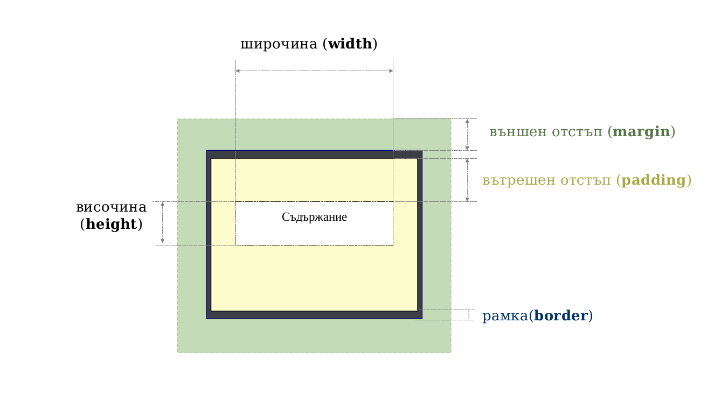

CSS - The Box Model
или
как браузърът интерпретира HTML елементите като кутийки
Created for

Какво е The Box Model
- Съществен елемент от Визуалния Модел за Форматиране (Visual Formating Model)– алгоритъма по който браузера визуализира елементите от страницата.
- Всеки елемент от дървото на HTML документа се интерпретира като правоъгълна кутийка.
- Подреждането на кутийките зависи от:
- размера на кутийката
- типа на елемента (блоков, поредов)
- схема за позициониране ( normal, float, absolute)
- връзките между елементите в дървовидната структура на документа (document tree)
Пример: DocumentVisualFormatingModel_single.html или в codepen
Структура на една кутия
Фигура
Описание
- съдържание (content) - това е съдържанието на самия елемент. Може да е текста между началния и крайния таг или друг елемент.
- вътрешен отстъп (padding) - това е разстоянието между "ръба" на съдържанието и вътрешната страна на рамката.
- външен отстъп (margin) - разстоянието от външния ръб на рамката до заобикалящите елементи. За по-кратко ще го наричаме само отстъп.
- рамка (border) - вътрешния й ръб съвпада с ръба на вътрешния отстъп, а от външния й ръб - започва външния отстъп.
Как да зададем размери на кутийката?
- Свойства:
widthиheight - Задават ширината(width) и височината(height) на съдържанието за елемент от тип блок.
- Ако желаем в зададените размери браузера да включи вътрешния отстъп и рамката, то трябва да използваме:
box-sizing: border-box; - Възможни стойности за width и height:
- Абсолютни (px, pt, cm, ...)
- Относителни (%, em, vh, vw,...)
- Auto (default) – браузера сам изчислява размера.
- Дефинирани са и свойствата min-width, max-width, min-heigh и max-heigth, чрез които по-детайлно можем да ограничим размерите на елемент.
- Когато са зададени едновременно width, min-width и max-width, то приоритета е: 1.min-width; 2.max-width; 3.width
- За височината е в сила същата приоритетна схема.
Как да зададем margin и padding?
За всяка една страна, поотделно:
- Вътрешен отстъп (padding):
padding-top: горен вътрешен отстъпpadding-right: десен вътрешен отстъпpadding-bottom: долен вътрешен отстъпpadding-left: ляв вътрешен отстъп
- Външен отстъп (margin):
margin-top: горен външен отстъпmargin-right: десен външен отстъпmargin-bottom: долен външен отстъпmargin-left: ляв външен отстъп
Често използвани обобщени записи:
padding: T R B L;- задава стойности за всяка една посока поотделно.
- пример:
padding: 2em 0 1.5em 1em; padding: TB RL;- задава едновременно стойност за горе и долу, ляво и дясно.
- пример:
padding: 2em 1em; - padding: TBRL;
- задава едновременно стойност за всички посоки.
- пример:
padding: 5px;
Легенда: T - top, R - right, B - bottom, L - left
NB! Тук са посочени само вариантите за padding. При margin записите са аналогични.
Блокови, поредови и замествани елементи
Блокови елементи
Блоковите елементи (block elements) генерират кутия, която се позиционира като блок - винаги започва на нов ред и заема целият ред, независимо дали съдържанието й ще запълни реда.
NB! Блоковите елементи могат да съдържат както поредови, така и блокови елементи.
NB! Размера на блоковите елементи може да се контролира чрез CSS свойствата width и height.
Блокови елементи са:
address, article, aside, blockquote, canvas,
dd, div, dl, fieldset, figcaption, figure,
footer, form, h1, h2, h3, h4, h5, h6, header,
hgroup, hr, li, main, nav, noscript, ol, output,
p, pre, section, table, tfoot, ul, video
Поредови елементи
Поредовите елементи (inline elements) генерират кутия, която се изобразява в рамките на текущия ред. Tе се позиционират непосредствено след предхождащият ги елемент, като браузерът поставя спейс между тях за разделител. Заемат толкова място, колкото е необходимо за да се представи съдържанието им.
NB! Поредовите елементи не могат да съдържат блокови елементи.
NB! CSS свойствата width и height нямат влияние над тях.
Поредови елементи са:
b, big, i, small, tt,
abbr, acronym, cite, code, dfn, em, kbd,
strong, samp, time, var,
a, br, img, map, object, q, script, span, sub, sup,
button, input, label, select, textarea
Замествани елементи
Заместваните елементи (replaced elements) представят външни обекти (изображение, видео и пр.) чието изобразяване е независимо от CSS.
Такива са елементите:
img, objec, video, textarea, input, button, select и др.
NB! Чрез CSS можем да контролираме някои аспекти на заместваните елементи като размери (width и height) и външни отстъпи.
Групиране на HTML елементи
Чрез елемента div можем да групираме елементи (блокови и/или поредови) в блок.
Чрез елемента span можем да групирам единствено поредови елементи и/или текст.
NB! Тези елементи не носят семантичен смисъл и се използват единствено като контейнер за други елементи.